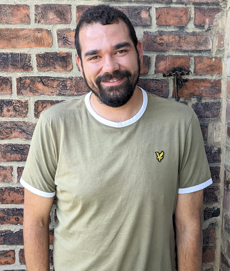
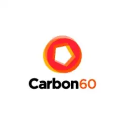

James Edwards

Professional Summary
I am an experienced, CIPD Certified Resourcing specialist, with a passion for people and problem solving.
Through my previous employments I have built up years of experience in providing an outstanding level of service to clients, candidates and colleagues alike.
I can demonstrate a high level of technical understanding, coming from a hands-on technical background myself, having worked as an IT Support Engineer and then spending the last 10 years within technical recruitment.
Work Experience
DeepL - Remote (Germany)
Senior Talent Acquisition Specialist
August 2022 - Present
Involved in managing recruitment for a wide range of roles within Engineering across a number of European locations (UK, Germany, Netherlands, Poland).
Specialising on Engineering roles including:
- Front End
- Back End
- QA
- Leadership
Also invoved in recruitmemt for Product and numerous high profile HR projects
TUI - Hannover, Germany & London, UK)
Talent Acquistion Team Lead
September 2018 - August 2022
Within this role I led the global TA function for IT & Digital, managing vacancies across locations including UK&I, Germany, Belgium, Netherlands, Sweden.
I had four direct reports and also supported five other recruiters as matrix team lead.
My responsibilities included:
- Team Leadership and management
- Vacancy distribution and load management
- Resource planning
- Hands on Recruiting
- Leading the "attraction" workstream in our "digital talent taskforce"

Carbon60 - Aylesbury, UK)
Delivery Team Leader
November 2017 - September 2018
Team Leader managing the Airbus MSP account, for whom we acted as a Tier 1 supplier for all Airbus UK contract roles.
Delivering contractors working in a wide range of sectors including:
- Software & Hardware Development
- IT Security
- Networking / Telecoms
- Supply Chain
- Project Management
- Satellite & Aircraft Engineering
- HR / Recruitment
- Finance
My responsibilities included:
- Team Leadership and supporting professional development
- Vacancy distribution and load management
- Account Management
- Hands on Recruiting
Key Skills
- Team Leadership
- Technical Recruitment
- Product Recruitment
- Mentorship
- Hands on Recruiting
Education
The Grange School
Sept 2002 – May 2011
Training & Certifications
- Level 3 Advanced Apprenticeship in IT, Software, Web & Telecoms Professionals - Distinction
- Microsoft Certified Technology Specialist (MCTS): Windows 7, Configuring
- CompTIA A+ (220-701 and 220-702)
- Microsoft Technology Associate (MTA): Networking Fundamentals
- MTA: Windows Operating Systems Fundamentals
- MTA: Security Fundamentals
My Hobbies
Contact Me